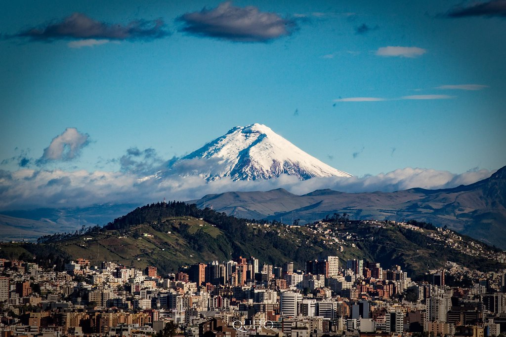

City
Upcoming Events
April 7: Políticamente incorrecto
April 13-14: Economic Master Class
April 17: Cultural Festival 2021
April 22: Conversation "Finances for Small Business"

Quito’s Special Economic Development Zone
Also known as ZEDE, the special economic development zone in Ecuador’s capital Quito is an interesting project and has allowed for the stimulation of economic development. ZEDE aims to be the ideal destination for the development of new and innovative investment projects. This zone will create opportunities which will allow for the expansion of production and the development of new products and services. In addition, it provides an ideal zone for value-added production. It will conveniently offer a single location that meets logistical needs while also providing cost reduction, international competitiveness, trade, and tax benefits. Due to a heavy reliance on its oil sector (where profits are directly linked to international oil prices), the government has developed this program to stimulate other sectors. By stimulating these sectors the government aims to not only stabilise the national economy but strengthen it, ensuring that there is not an over-reliance on a single sector. Whole article article at: BizLatin Hub

Quito in the Middle of the world
Quito, officially known as San Francisco de Quito is the capital of Ecuador, a country located in South America. It is the first city in the world that was named a World Heritage Site by UNESCO. In 2008, it celebrated 30 years of being part of the list of World Heritage sites. After La Paz in Bolivia, Quito is the second highest capital city in the world at 2850m. Furthermore, Quito is the second most populated city in Ecuador, after Guayaquil. The city is also the official headquarters of the Union of South American Nations. Encircled by Andes volcanoes, nestled in the Guayllabamba river basin, Quito is a dreamer’s paradise. Due to its elevated location and mild climate, Quito can be visited any time of the year, making it a perfect tourist destination. The surrounding snow capped volcanoes, especially the Pichincha volcano standing tall at 4790m, add a natural touch to its beauty. The city boasts of 40 churches, 16 convents and monasteries, 12 museums and a rich cultural heritage. Many tourists enjoy exploring the city, by viewing the monuments and churches and getting to know the vibrant life of the local people. Quito is a mix of old colonial architecture with upcoming modern complexes resulting in an old world charm of the city. There are plenty of attractions in the form of trendy shopping malls, high quality restaurants, colonial museums, churches, historical monuments and outdoor markets. As you enjoy your evening walking on the cobbled roads, trying to summarize the breathtaking view, you will definitely understand why Quito is a World Heritage site. Source: Quito.com
Demographics
- Country: Ecuador
- Capital: San Francisco de Quito (Quito)
- Area : 372.39 km² (143.78 sq.mi)
- Elevation: 2,850 m (9,350 ft) above sea level
- Population: city 2,011,388 (2020)
- Population: metro 3,156,182 (2020)
- Official language Spanish

Cuenca 477, Quito 170401

1800 - (593)- 983 -665593
discover-quito@info.com